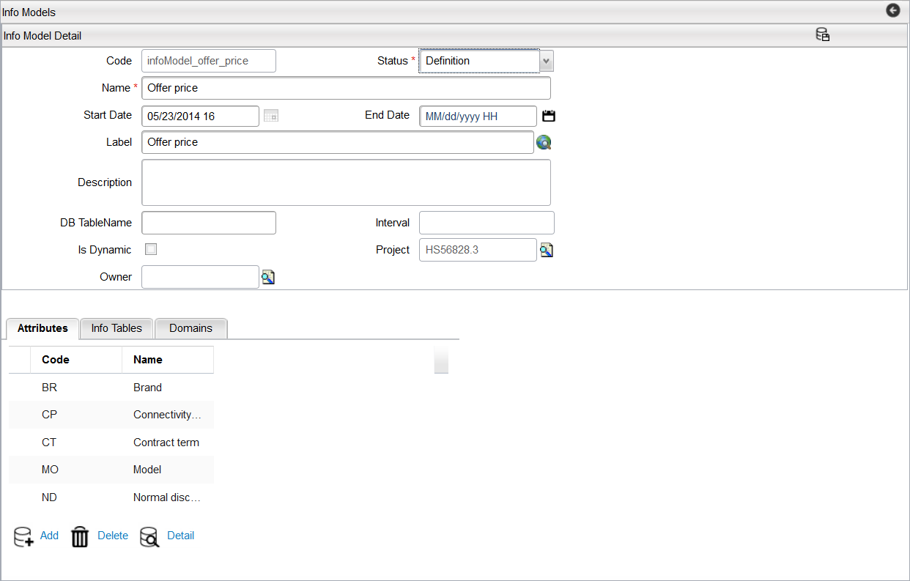

View Info Model Details
To view details of an info model, follow these steps:
Note: A project must be opened to view details of an info model.
- In Catalog Designer application, navigate to Designer > Info Models menu.
- The Info Models Search Criteria dialog appears; search for an info model.
- Select an info model from the result list (for example, PersonInfo), in the Results pane.
- Click the Detail button located at the bottom of the dialog.
- The Info Model Detail dialog appears with the details of selected info model.

Note: You cannot make changes to details of an info model that has its Status field set to Active, but you can add more data in the info tables.
|